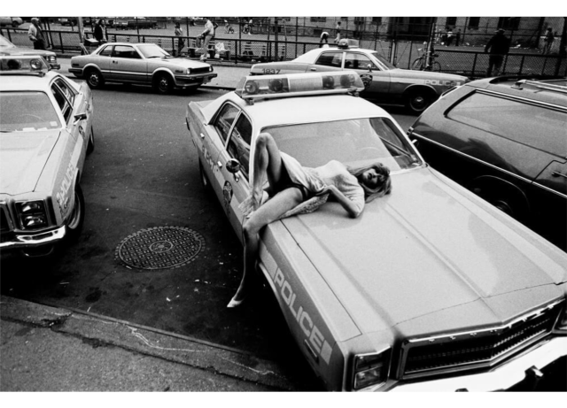

Murder in 3, 2, 1,…
Murder in 3, 2, 1,…
Something fascinating happening over there. Times Square, 1970s.
Post-wedding pretzels on 5th Ave, 1976
Church on Mulberry Street, 1975
Aerial view of Madison Square Garden in 1975. Looks kind of circular. Must be an optical illusion.
125th and Amsterdam Ave, 1970
Joey Ramone trying to impress Deborah Harry with his surfboard, 1977
Nuns in the heart of sin. Times Square, 1968.
The Flatiron Building, 1977
Hell’s Kitchen, 1968
The New York Doll Hospital in the 1970s
Lady Pink, Kel 1ST, Mare 139 and Python at Fashion Moda, in 1980.
Dude is thirsty. 115th Street and Lenox Ave, 1973.
Battery Park as seen from the WTC, 1975
Harlem, 1966
Jackson Avenue station in the Bronx, 1980s
Dean Street station, Brooklyn, 1980s
 Sexy woman on an unsexy car, 1982
Car wash at Bedford Ave. & Lincoln Pl. in Brooklyn, 1985
Junius Street and Belmont Avenue, Brooklyn, 1970s
Across from Lynch Park, near the Brooklyn Navy Yard, 1970s
Boarded-up buildings and the Bedford Avenue facade of the Smith Building, 123 South 8th Street
6th Ave near 44th Street, 1978